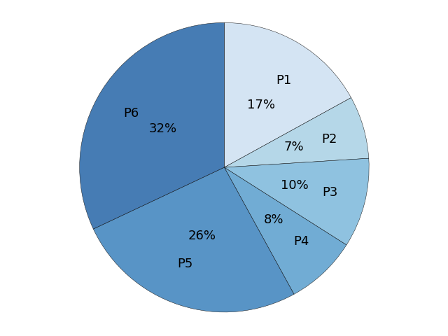
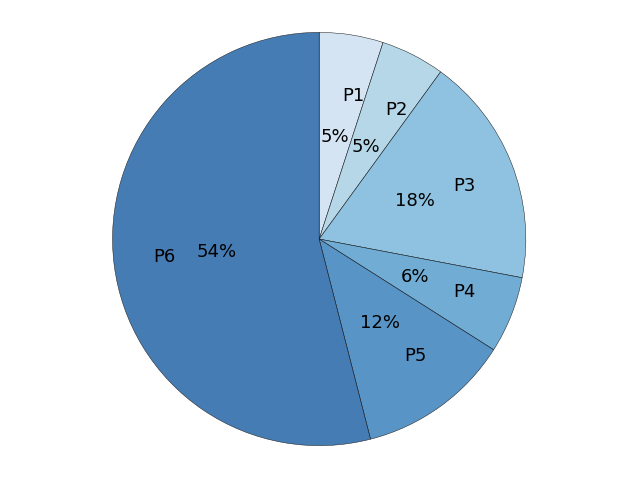

Note
Click here to download the full example code
Piechart Completeness¶
- 
- 
Out:
C:\Users\kelda\Desktop\repositories\github\pyAMR\main\examples\visualization\plot_piechart_completeness.py:74: MatplotlibDeprecationWarning: Support for passing a radius of None to mean 1 is deprecated since 3.3 and will be removed two minor releases later.
plt.pie(sizes,
C:\Users\kelda\Desktop\repositories\github\pyAMR\main\examples\visualization\plot_piechart_completeness.py:109: MatplotlibDeprecationWarning: Support for passing a radius of None to mean 1 is deprecated since 3.3 and will be removed two minor releases later.
plt.pie(sizes,
7 8 9 10 11 12 13 14 15 16 17 18 19 20 21 22 23 24 25 26 27 28 29 30 31 32 33 34 35 36 37 38 39 40 41 42 43 44 45 46 47 48 49 50 51 52 53 54 55 56 57 58 59 60 61 62 63 64 65 66 67 68 69 70 71 72 73 74 75 76 77 78 79 80 81 82 83 84 85 86 87 88 89 90 91 92 93 94 95 96 97 98 99 100 101 102 103 104 105 106 107 108 109 110 111 112 113 114 115 116 117 118 119 120 121 122 123 124 125 126 127 128 129 130 131 132 133 | # Libraries.
import numpy as np
import seaborn as sns
import matplotlib as mpl
import matplotlib.cm as cm
import matplotlib.pyplot as plt
# Matplotlib font size configuration.
mpl.rcParams['font.size'] = 9.0
# ------------------------------------------------------------------------
# HELPER METHODS
# ------------------------------------------------------------------------
def transparency(cmap, alpha):
"""
"""
for i,rgb in enumerate(cmap):
cmap[i] = rgb + (alpha,)
return cmap
# ------------------------------------------------------------------------
# CONFIGURATION
# ------------------------------------------------------------------------
# Common configuration.
title_font_size = 30
labels = ['P1','P2','P3','P4','P5','P6'] # labels
labels_empty = ['', '', '', '', '', ''] # labels empty
colors = transparency(sns.color_palette("Blues", n_colors=7), 0.75)
colors = colors[1:] # First color is white...
explode = (0,0,0,0,0,0) # proportion with which to offset each wedge
autopct = '%1.0f%%' # print values inside the wedges
pctdistance = 0.5 # ratio betwen center and text (default=0.6)
labeldistance = 0.7 # radial distance wich pie labels are drawn
shadow = False # shadow.
startangle = 90 # rotate piechart (default=0)
radius = None # size of piechart (default=1)
counterclock = False # fractions direction.
center = (0,0) # center position of the chart.
frame = False # plot axes frame with the pie chart.
# map with arguments for the text objects.
textprops = {'fontsize':'x-large'}
# map with arguments for the wedge objects.
wedgeprops = {}
# Color manually selected.
colors_manual = ['mediumpurple',
'violet',
'mediumaquamarine',
'lightskyblue',
'lightsalmon',
'indianred']
# ---------------------------------------------------------------------
# FIGURE 1
# ---------------------------------------------------------------------
# Number of complege profiles for each of the selected biochemical
# markers (ALP, ALT, BIL, CRE, CRP, WBC) for the non-infection category
# during the years 2014 and 2015.
# Portions.
sizes = [17, 7, 10, 8, 26, 32] # proportions
# Plot.
plt.figure()
plt.pie(sizes,
explode=explode,
labels=labels, # Use: labels / labels_empty
colors=colors, # Use: colors / colors_manual
autopct=autopct,
pctdistance=pctdistance,
labeldistance=labeldistance,
shadow=shadow,
startangle=startangle,
radius=radius,
counterclock=counterclock,
center=center,
frame=frame,
textprops=textprops,
wedgeprops={'linewidth':0.35,
'edgecolor':'k'})
# Format figure.
plt.axis('equal')
plt.tight_layout()
plt.title("", fontsize=title_font_size) # Add title.
#plt.legend(labels=labels, fontsize='xx-large') # Add legend.
# ---------------------------------------------------------------------
# FIGURE 2
# ---------------------------------------------------------------------
# Number of complete profiles for each of the selected biochemical
# markers (ALP, ALT, BIL, CRE, CRP, WBC) for the infection category
# during the years 2014 and 2015.
# Portions
sizes = [5, 5, 18, 6, 12, 54] # proportions
# Plot.
plt.figure()
plt.pie(sizes,
explode=explode,
labels=labels, # Use: labels / labels_empty
colors=colors, # Use: colors / colors_manual
autopct=autopct,
pctdistance=pctdistance,
labeldistance=labeldistance,
shadow=shadow,
startangle=startangle,
radius=radius,
counterclock=counterclock,
center=center,
frame=frame,
textprops=textprops,
wedgeprops={'linewidth':0.35,
'edgecolor':'k'})
# Format figure.
plt.axis('equal')
plt.tight_layout()
plt.title("", fontsize=title_font_size) # Add title.
#plt.legend(labels=labels) # Add legend.
# Show graphs.
plt.show()
|
Total running time of the script: ( 0 minutes 0.142 seconds)